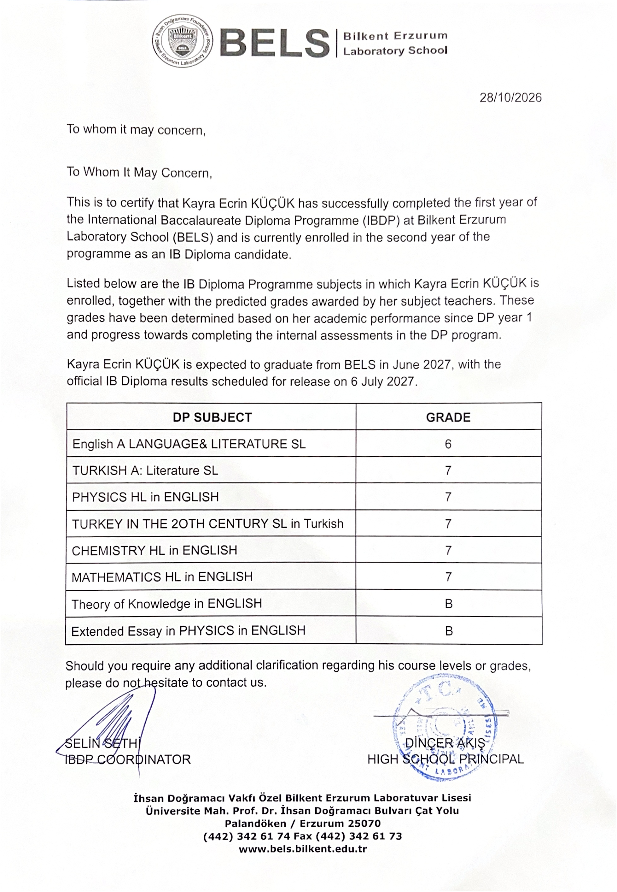
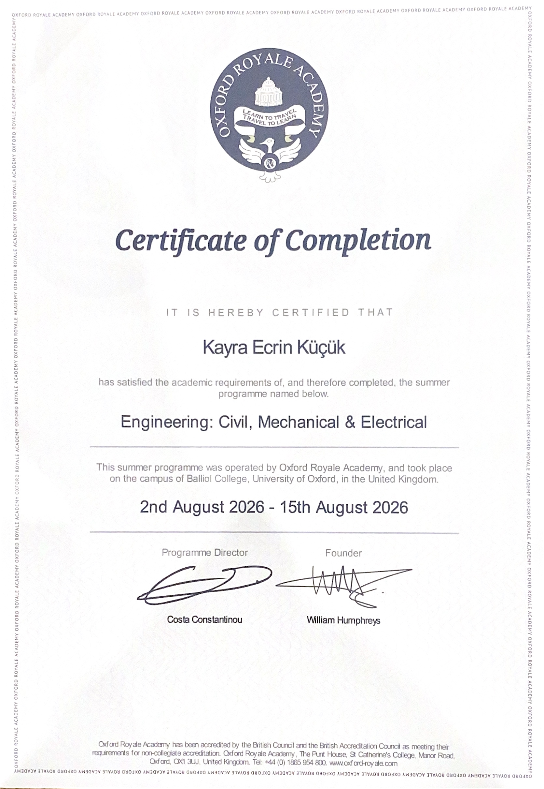
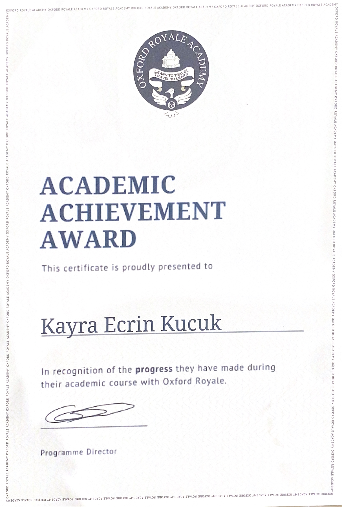
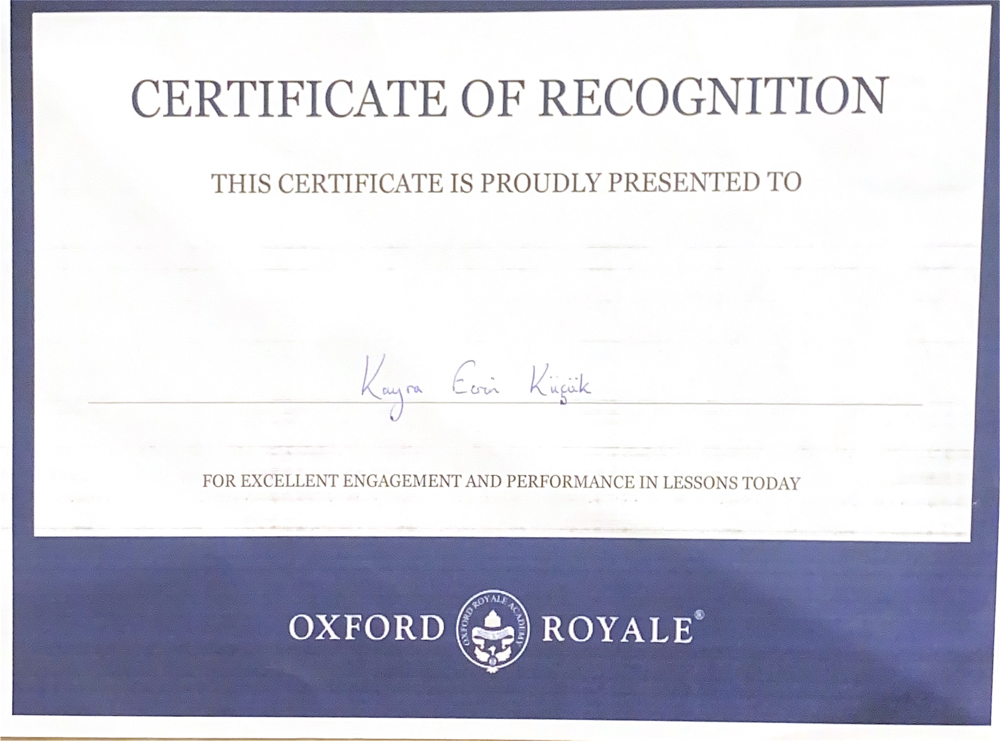
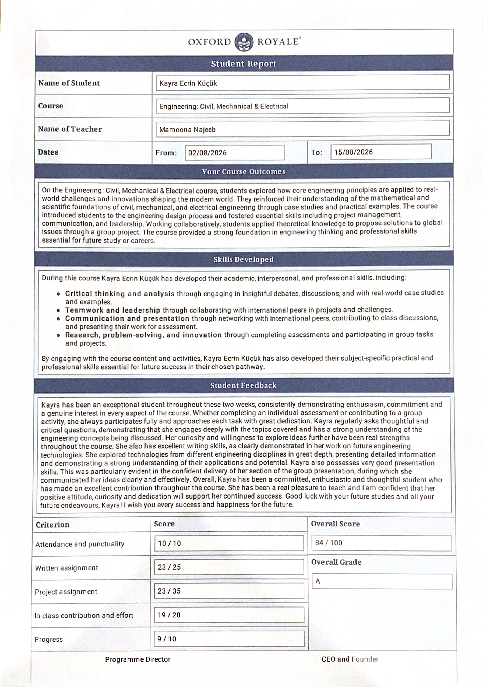
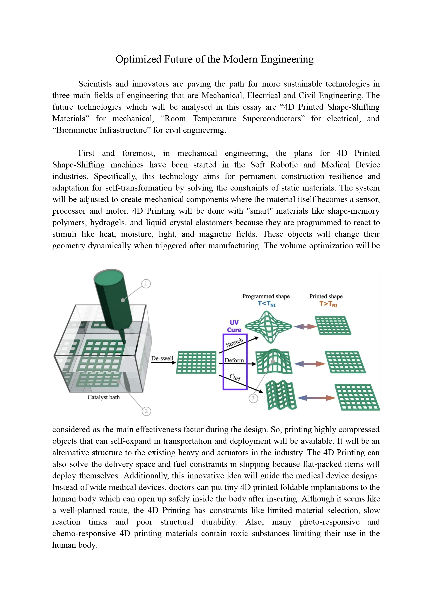
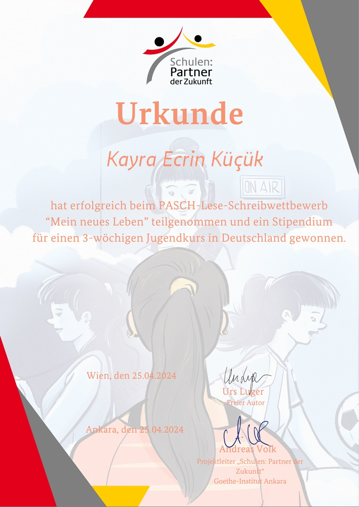

Profile & Academic Overview
IB Diploma candidate at Bilkent Erzurum Laboratory School (BELS) with an official predicted score of 43 / 45 (Triple 7 in Higher Level Mathematics, Physics, and Chemistry). Seeking undergraduate admission in Mechanical Engineering to explore thermodynamics, non-contact magnetic braking mechanisms, sustainable energy conversion, and advanced mechanical systems.
Experienced in real-world university engineering research through an internship at Ataturk University’s Mechanical Engineering Department, intensive pre-university engineering coursework at the Oxford Royale Summer Schools Engineering programme on the campus of Balliol College, University of Oxford (Overall Grade A, 84%, Academic Achievement Award & Certificate of Recognition), and an international Goethe-Institut PASCH Literary Competition Scholarship for youth academic immersion in Germany. Combines academic precision with extensive community leadership as MUN Founder and Head Delegate, arts entrepreneurship as Founder of LeoPard's Photography Studio (@leop.ardsstudio), stage drama, and multi-sport athletic discipline (Boxing 4th Degree Blue Belt, Football Team Captaincy).
Education & IB Curriculum
Bilkent Erzurum Laboratory School (BELS)
IB Diploma Programme — Grade 12 (Official Predicted: 43 / 45)Rigorous international curriculum emphasizing analytical sciences, advanced mathematics, experimental investigation, and academic writing in English.
- Mathematics HL in English — 7 (Calculus, differential equations, vectors, statistics)
- Physics HL in English — 7 (Mechanics, thermodynamics, electromagnetism, wave physics)
- Chemistry HL in English — 7 (Thermodynamics, reaction kinetics, equilibrium, electrochemistry)
- Turkish A: Literature SL — 7 (Literary criticism, comparative analysis, rhetoric)
- Turkey in the 20th Century SL in Turkish — 7 (Socio-economic history, constitutional reforms)
- English A: Language & Literature SL — 6 (Rhetorical discourse, media analysis, essays)
- Extended Essay in Physics in English — Grade B (Mechanics & thermodynamic research)
- Theory of Knowledge (TOK) in English — Grade B (Epistemology, scientific methods & bias analysis)
Academic Achievements & Honors
Oxford Royale Summer Schools Engineering: Civil, Mechanical & Electrical
Balliol College, University of Oxford · Overall Grade A (84/100) · Triple Honor & Faculty Report- Completed intensive pre-university engineering coursework held on the campus of Balliol College, University of Oxford, integrating structural load dynamics, fluid mechanics, thermodynamic cycles, and circuit design.
- Honored with three distinct official credentials: Certificate of Completion, Academic Achievement Award (in recognition of progress made during the academic course), and Certificate of Recognition (for excellent daily engagement and lesson performance).
- Official Faculty Student Report by Teacher Mamoona Najeeb: Overall Grade A (84/100), featuring 10/10 in Attendance & Punctuality, 23/25 in Written Assignment, 19/20 in In-class Contribution, and 9/10 in Progress.
- Teacher Commendation: "Kayra regularly asks thoughtful and critical questions, demonstrating that she engages deeply with the topics covered... She also has excellent writing skills, as clearly demonstrated in her work on future engineering technologies... confident delivery of her section of the group presentation."
PASCH Goethe-Institut Literature Competition & Scholarship Award (Urkunde)
1st Place / Scholarship Winner (*Stipendium*) · 3-Week Immersion Course in Germany- Won 1st prize in the national/international German reading & writing competition "Mein neues Leben" organized under the worldwide PASCH initiative (Schulen: Partner der Zukunft) and Goethe-Institut Ankara, evaluated by Austrian author Urs Luger and Goethe-Institut project director Andreas Volk.
- Awarded a prestigious full scholarship (Stipendium) for an intensive 3-week youth language, scientific, and cultural immersion course in Germany (3-wöchiger Jugendkurs in Deutschland, Goslar).
- Demonstrated advanced trilingual fluency, cross-cultural collaboration, and creative literary rhetoric in the German language.
IB Diploma Official Predicted Distinction
Official Score: 43 / 45 · Perfect 21/21 in Higher Level STEM- Earned the maximum possible grade of 7 in all three Higher Level subjects: Mathematics HL (7), Physics HL (7), and Chemistry HL (7).
- Accumulated 41 out of 42 subject points plus 2 Diploma Core bonus points (Grade B in Physics Extended Essay & Grade B in Theory of Knowledge).
- Official predicted grade certificate signed by BELS High School Principal Dinçer Akış and IBDP Coordinator Selin Sethi, sealed with the official school stamp (October 2026).
Model United Nations International Recognition
MUN Bilbao Conference Delegate & Recognition- Earned international recognition for diplomatic negotiation, consensus assembly, and draft resolution defense on global humanitarian and scientific challenges.
Engineering Research & Internships
Ataturk University Mechanical Engineering Department
High School Research Intern · "Magnetic Braking Systems as a Future Innovation in Thermodynamics"Research Advisor: Prof. Dr. Isak Kotcioglu, Department of Mechanical Engineering
- Conducted investigative research on eddy current magnetic braking systems, examining non-contact kinetic energy conversion into thermal dissipation through electromagnetic induction.
- Analyzed thermodynamic heat transfer rates, surface temperature gradients, and thermal equilibrium dynamics to mitigate component fatigue and brake fade.
- Modeled comparative efficiency, friction wear elimination, and sustainability metrics of electromagnetic deceleration mechanisms against conventional friction brake systems.
Physics Extended Essay in English
Independent IB Research Investigation · Predicted Grade: Grade B- Authored an independent 4,000-word academic physics research paper exploring physical dynamics, mechanics, and thermodynamic energy behavior.
- Engineered experimental apparatus, calibrated sensors, recorded quantitative datasets, and conducted rigorous mathematical analysis including propagation of instrumental uncertainties.
- Synthesized empirical observations with theoretical differential equations, demonstrating advanced academic writing and scientific rigor in English.
"Optimized Future of the Modern Engineering" — Academic Research Paper
Oxford Royale Summer Schools · Engineering · Balliol College, University of Oxford · Score: 23 / 25 (Grade A)- Authored an in-depth 1,036-word technical investigation analyzing three transformative paradigm shifts in modern engineering: 4D Printed Shape-Shifting Materials (Mechanical), Room-Temperature Superconductors (Electrical), and Biomimetic Infrastructure (Civil).
- Mechanical Focus: Explored soft robotics and self-transforming mechanisms using smart stimuli-responsive materials (shape-memory polymers, hydrogels, liquid crystal elastomers) and proposed self-expanding foldable biomedical implants for minimally invasive surgery.
- Electrical Focus: Modeled zero-resistance transmission to eliminate 5% grid dissipation and cooling overhead in AI data centers; examined diamond anvil cell high-pressure hydride synthesis and ceramic brittleness constraints.
- Civil Focus: Analyzed autonomous bio-concrete self-healing through dormant bacterial spores precipitating calcium carbonate in microcracks to extend infrastructure longevity and reduce cement emissions.
- Faculty Commendation (Teacher Mamoona Najeeb): "She also has excellent writing skills, as clearly demonstrated in her work on future engineering technologies." (Written Assignment: 23/25).
Leadership, Arts & Community Initiatives
BELS Model United Nations (MUN) Community
Founder, Leader & Head Delegate · 4 Years Experience- Founded the official MUN Community at Bilkent Erzurum Laboratory School, building conference infrastructure and parliamentary procedure workshops from the ground up.
- Mentored 15 junior delegates in public speaking, resolution drafting, and international law debate techniques.
- Successfully authored and passed 3 resolutions in the General Assembly and represented the school internationally at MUN Bilbao in Spain.
Creative Arts, Media & Stage Leadership
Founder (@leop.ardsstudio), Festival Head Organizer, Theatrical Lead & Choreography- LeoPard's Photography Studio: Founder of @leop.ardsstudio, a digital photography studio uniting amateur photographers internationally to exhibit, celebrate, and commercialize PhotoArt.
- Bilkent Erzurum Literature Festival Team: Head Organizer & Costume Contest Judge (10th grade). Managed logistics, led presentation ceremonies, and hosted the "Literature & Cinema Festival 2026".
- Theater & Drama (Class of 2027): Assistant Student-Actress to Director Teacher. Performed the central lead role of "Kreon" in Sophocles' tragedy Antigone in a 45-student stage production before an audience of nearly 1,000 people.
- Republic Day Ball Waltz Performance Community: Main Assistant to the Dance Teacher. Choreographed and performed in a 20-couple formal waltz routine for the Republic Day Ball.
Family & Community Responsibilities
Dedicated Support & Bilingual Interpretation- Assisting family and household members with critical administrative tasks such as doctor appointments, healthcare navigation, banking affairs, and visa interviews.
- Providing active English-Turkish oral interpretation and document translation for family members.
Athletics & Physical Discipline
Boxing — Spor ve Akademi Fight Club & Fitness
Achieved 4th Degree Blue Belt through disciplined rank progression: 7th Degree White, 6th Degree Yellow, and 5th Degree Green Belts.
Soccer & Basketball — BELS Varsity
Girls' Football Team Captain & Co-Coach: Guided team to 2nd place interschool tournament cup.
Girls' Basketball Team: Competed across consecutive seasons, earning 2nd and 3rd place trophies.
Technical Skills & Engineering Competencies
⚙️ Mechanical & Physical Sciences
Core scientific principles applied in university research, laboratory experimentation, and high school engineering coursework.
📐 Mathematics & Quantitative Modeling
Advanced mathematical foundation proven with a grade of 7 in IB Mathematics HL, modeling rates, fields, and physical systems.
🔬 Laboratory & Computational Tools
Precision bench instrumentation, experimental measurement tools, data analysis scripts, and technical documentation.
🗣️ Leadership & Diplomacy
Bilingual communication, organizational leadership, delegate mentorship, and stage presentation experience.
🌍 Languages
🎯 University Objective
Seeking undergraduate admission in Mechanical Engineering at a top-tier international institution. Eager to contribute to university laboratories focusing on thermodynamics, innovative magnetic deceleration mechanisms, sustainable mobility, and robotics.
Verified Academic Credentials & Certifications
Official authenticated documentation of academic completions, competitive scholarships, and teacher evaluations. Click any credential to inspect the high-resolution certificate or download the official PDF.

IBDP Predicted Grades Transcript
Official certification letter and academic transcript issued and sealed by Bilkent Erzurum Laboratory School (BELS), signed by High School Principal Dinçer Akış and IBDP Coordinator Selin Sethi.

Certificate of Completion
Summer academic engineering programme operated by Oxford Royale Academy on the campus of Balliol College, University of Oxford. Covered core disciplines and engineering design challenges.

Academic Achievement Award
Proudly presented to Kayra Ecrin Küçük in recognition of outstanding academic progress, critical analysis, and intellectual commitment during the engineering programme.

Certificate of Recognition
Awarded for distinguished participation, exemplary critical questioning, and classroom leadership in advanced engineering seminars.

Faculty Report & Transcript
Detailed academic evaluation highlighting 10/10 attendance, 23/25 written assignment, and commendation for investigative research on future engineering technologies.

Academic Research Paper
Technical paper evaluating 4D shape-shifting materials in soft robotics, room-temperature superconductors in zero-loss grids, and bacterial bio-concrete for autonomous infrastructure repair.

PASCH Urkunde & Stipendium
1st Prize in the literary writing contest "Mein neues Leben", earning a full competitive scholarship for a 3-week immersion course in Germany.
Get in Touch
Interested in academic inquiries, engineering collaboration, or discussing research? Reach out anytime at kayraecrinkucuk@gmail.com.